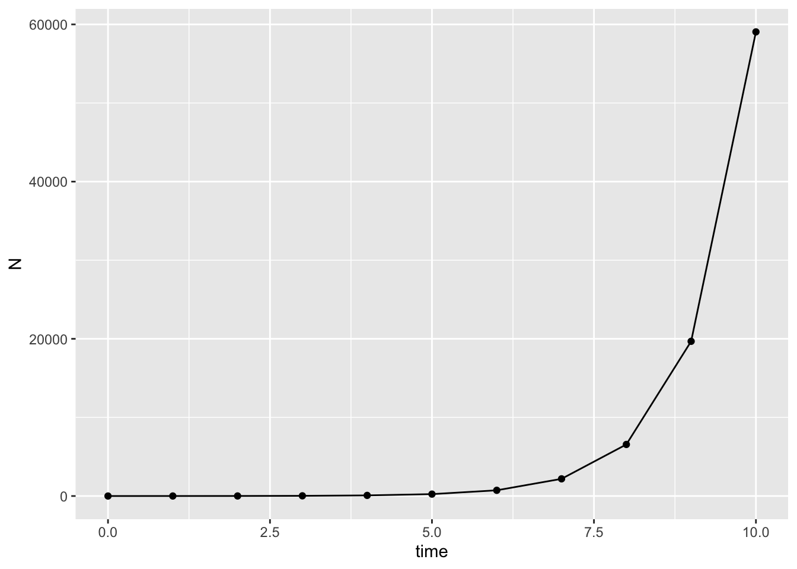
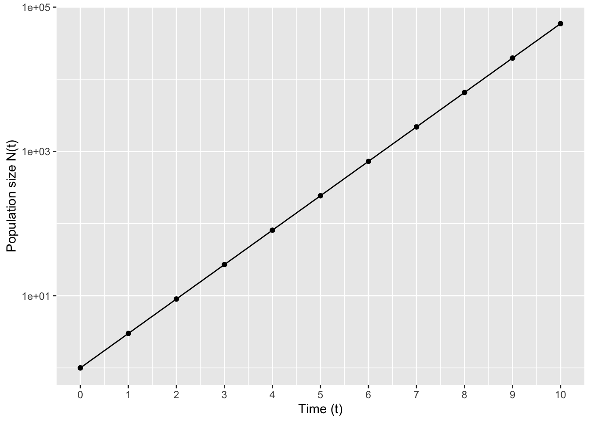
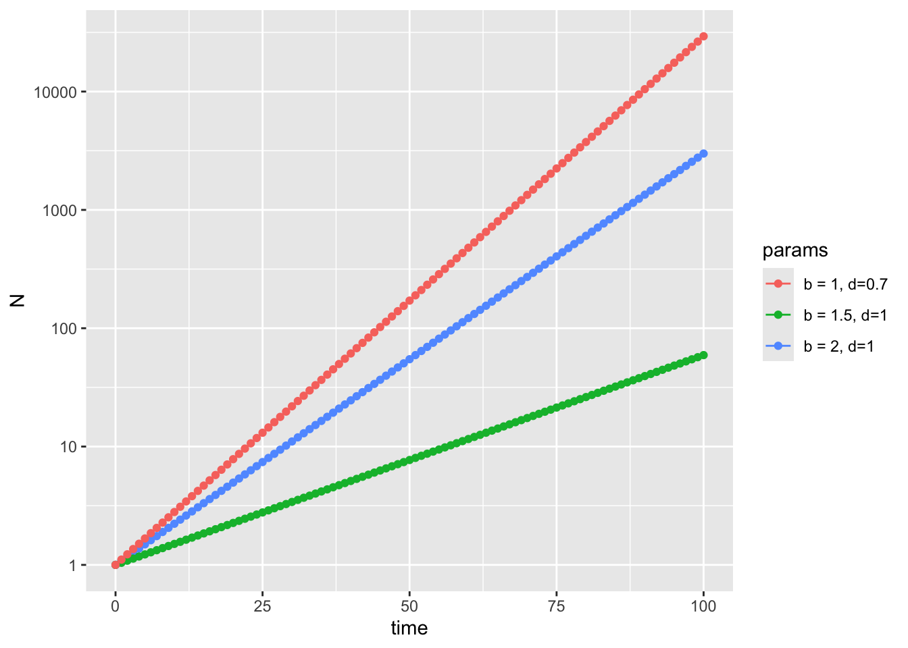
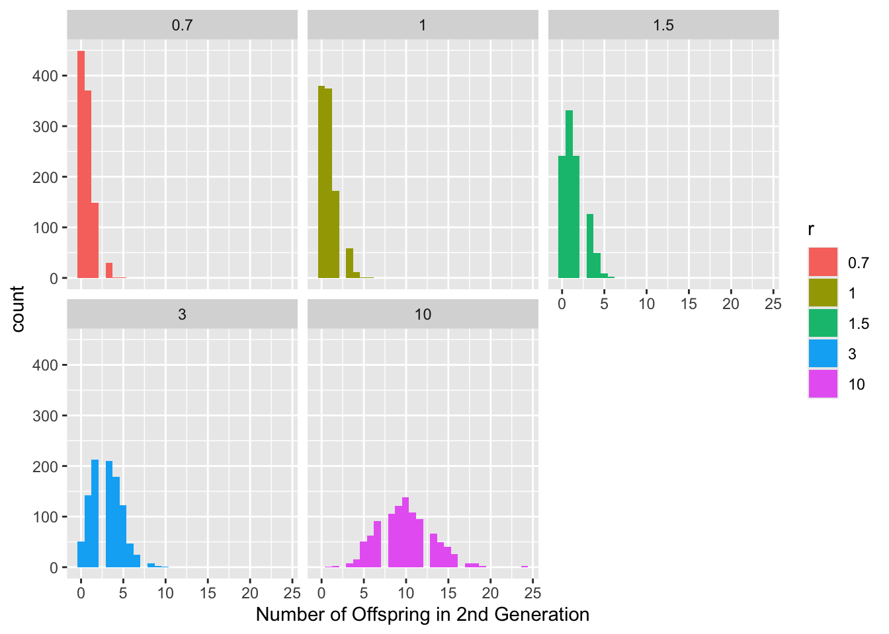
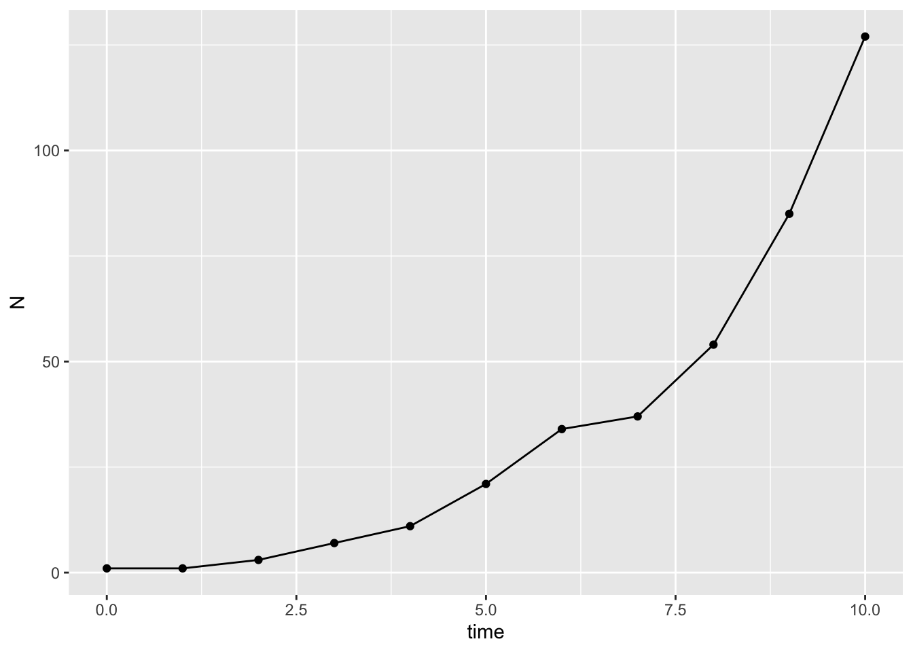
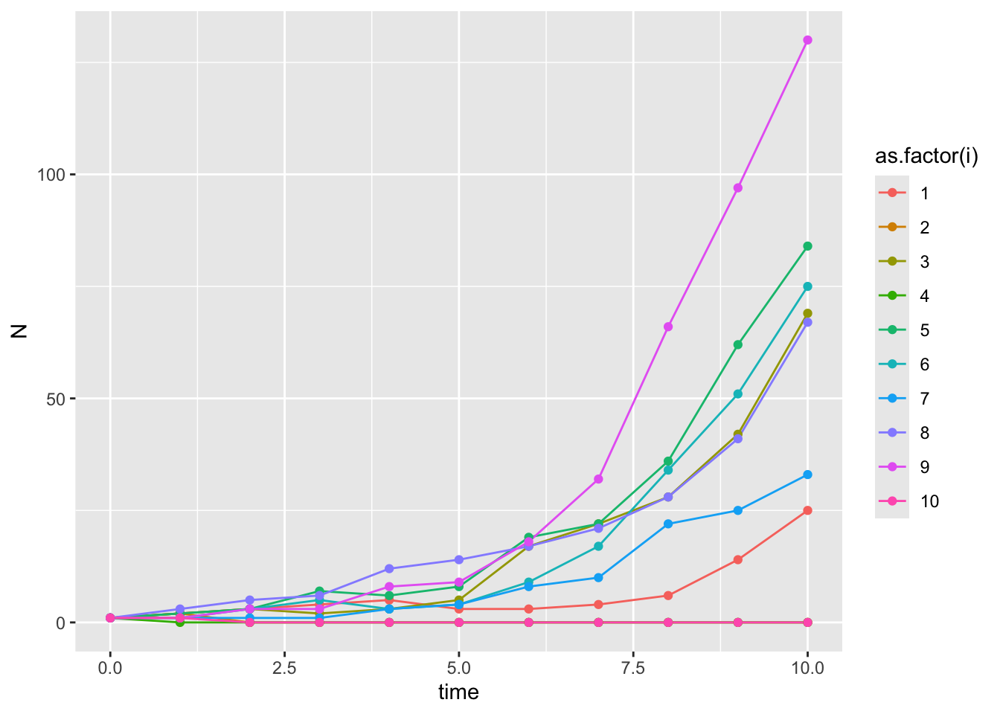
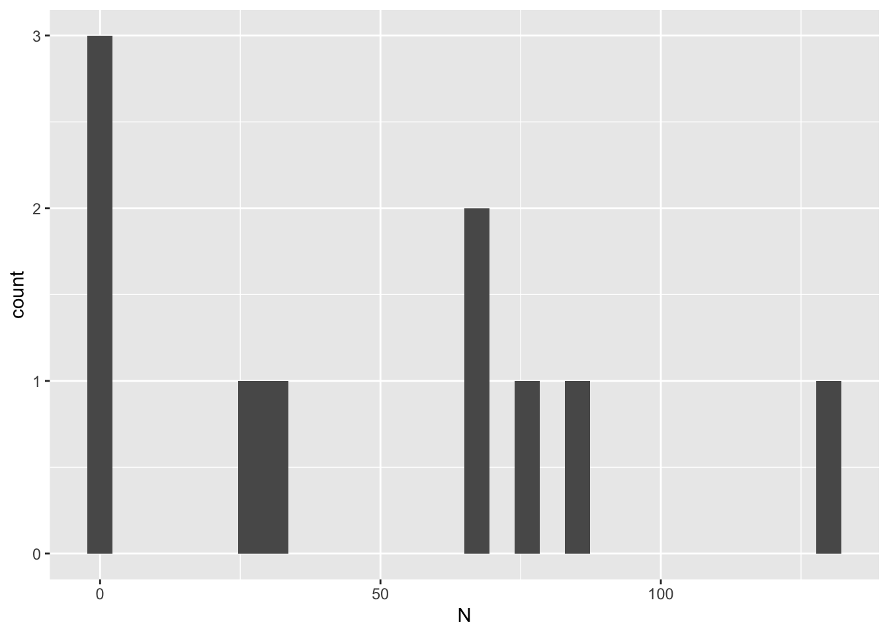
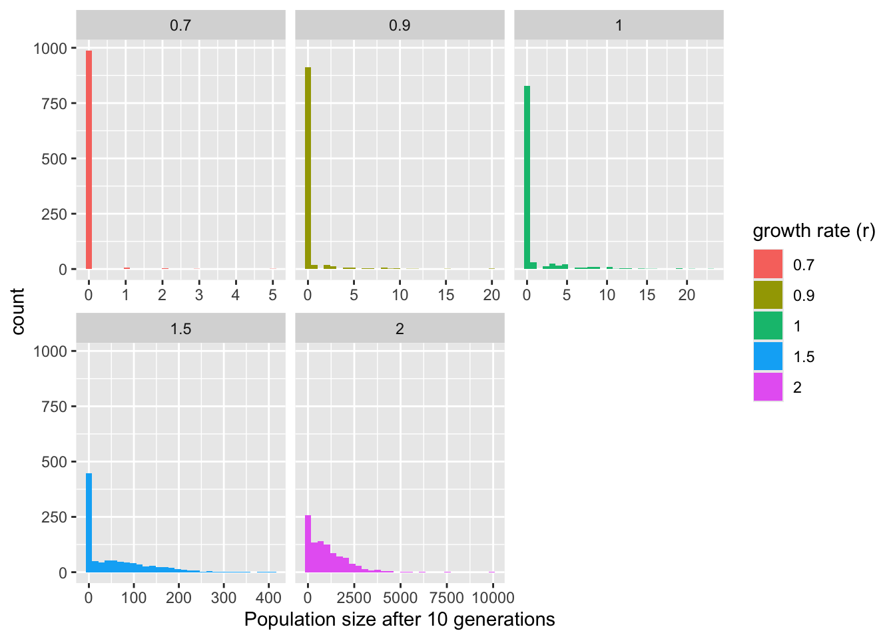

library(tidyverse)12 Mathematical Models in Biology
12.1 Lesson preamble
12.1.1 Reminders
No assignment this week - all done for the term!
Challenge Assignment (“take-home exam”) distributed Fri March 6th and due Thurs March 12th
Project proposal (1 page, non-binding) due Thurs March 5th
12.1.2 Learning Objectives
Understand the utility of mathematical models in biology
Recognize the difference between mathematical models and other types of “models”
Simulate simple models of population growth in R
Understand the different assumptions and outputs of deterministic vs stochastic models
12.2 An introduction to mathematical modeling in biology
12.2.1 What are mathematical models?
Mathematical models are descriptions of biological processes that are based on our understanding of the underlying mechanisms producing our observations.
Most commonly, mathematical models describe the dynamic processes that lead to changes in the quantity or distribution of some entity. For example, the number of individuals of a particular species in a particular population can change due to births and deaths, which can be influenced by resource availability, competition or predation from other species, the genotype and phenotype of individuals, disease, weather, and chance events.
Typically, models describe idealized simplifications of complex biological processes, and can help us build intuition and understanding for how those processes may unfold in nature.
There are many uses of the word “model” in biology that do not refer to mathematical models
(Mental) model - conceptual framework for understanding a process
Model organisms - commonly-used study organisms like E. coli, Arabidopsis, or lab mice
Statistical (or machine learning) model - a mathematical description of a trend seen in data or a data-generating process, but without any particular connection to the underlying biological process
12.2.2 What do we need models for?
Mathematical models help us
- clarify assumptions we may have about how complex systems work
- build understanding of how complex systems behave and why
- generate predictions and hypothesis
- test predictions and hypothesis based on analysis of the model (or fitting the model to data)
- determine what data is needed to learn about something (of if it is possible to, given the data that is available, reliably infer parameters of interest)
- determine in what ways certain kinds of data may be problematic or biased
12.2.3 Types of mathematical models
There are many many types of mathematical models, and lots of ways to classify them! Some terms you will hear if you continue to be exposed to modeling include
model scale: this could range from atomic (e.g., protein folding) to molecular (e.g., enzyme binding, gene expression) to cellular (e.g., virus infection, cancer growth) to population-level (e.g., species competition) and beyond
single species or multi-species
1 dimension vs 2D or 3D
linear vs non-linear (e.g., growth)
deterministic vs stochastic (e.g., outcome depends on random events)
model purpose: e.g., basic exploration, hypothesis testing, parameter estimation, scenario comparison, prediction
12.2.4 Challenge
Match the famous mathematical models in biology with their creators and decade of creation
| Model | Creator | Date |
|---|---|---|
| Genetic drift | Thomas Malthaus | 1910 |
| Enzyme binding kinetics | Ronald Fisher + Seawall Wright | 1860 |
| Inheritance of discrete genetic traits in diploid organisms | Alfred Lotka + Vito Volterra | 1920 |
| Smallpox vaccination | Gregor Mendel | 1790 |
| Predator-prey interactions | Daniel Bernoulli | 1910 |
| Exponential human population growth | Leonor Michaelis + Maude Menton | 1760 |
12.3 Simple models of population growth
Let’s start by considering the simplest possible model of population growth. We’ll assume
all individuals reproduce only once per generation, at the exact same time
all individuals have exactly \(b\) offspring (births) each generation
there is no death
the population is closed: there is no immigration and no emigration
there is no stochasticity: individuals do not, by chance, give birth to more/fewer offspring
While this model could perhaps apply to bacterial cells growing in a petri dish or a plant growing in an isolated, optimized greenhouse, there is obviously no real system that satisfies all these very strong assumptions. However, when modeling, it’s helpful to first understand the simplest models before moving on to more complicated ones.
Let \(N_t\) be the number of individuals at times \(t=0,1,2,3,\dots\). Let \(N_0\) be the initial number of individuals in the population. Then, we can write down a rule - or recursive equation - for the population size at generation \(t+1\) in terms of the population size at the previous generation
\(N_{t+1} = N_t + b N_t= (1+b)N_t\)
We can write a simple algorithm to calculate \(N_t\)
N_0 <- 1
b <- 2
t <- 1
N <- N_0
for (t in 1:t){
N <- N + b*N
}
print(N)[1] 3Let’s try it for a few different values? Does it seem to be working?
If we want to make a plot of the population growth over time, we need to keep track of the population size at each time
N_0 <- 1
b <- 2
t_max <- 10
t_vec <- 0:t_max
N_vec <- rep(0, length(t_vec))
N_vec[1] <- N_0
for (i in 1:t_max){
N_vec[i+1] <- N_vec[i]*(1+b)
}
print(t_vec) [1] 0 1 2 3 4 5 6 7 8 9 10print(N_vec) [1] 1 3 9 27 81 243 729 2187 6561 19683 59049Now let’s plot it!
model_output <- data.frame(time = t_vec, N = N_vec)
model_output %>% ggplot(aes(x = time, y = N)) +
geom_line() +
geom_point() 
What does this graph look like?
Let’s try to generalize this model a little bit more:
Instead of thinking of each timestep \(t\) as a synchronized generation where everyone reproduces, we could alternatively think of it as a shorter timeframe (like an hour, day, or week)
Instead of thinking about \(b\) as the total number of offspring each individual prouces each generation, we can reframe it as the average number of offspring produced in that time period for a population where reproduction is NOT synchronized. For example, if on average individuals have 2 offspring every year, but, like humans, reproduction can occur anytime during the year, and we instead want to model the population size each month, we could use \(b = 2/12 \sim 0.17\).
we can include death: each timestep, some fraction of individuals \(d\) will die
Now we have our update rule is
\(N_{t+1} = N_t + b N_t - d N_t= (1+b-d)N_t\)
Let’s update our simulation, turning it into a function so that we can easily simulate it for multiple different parameter values
N_0 <- 1
b <- 2/12
d <- 1/12
t_max <- 100
sim_birth_death <- function(N_0, b, d, t_max){
t_vec <- 0:t_max
N_vec <- rep(0, length(t_vec))
N_vec[1] <- N_0
for (i in 1:t_max){
N_vec[i+1] <- N_vec[i]*(1+b-d)
}
return(list(time = t_vec,N = N_vec))
}
model_output <- as.data.frame(sim_birth_death(N_0, b, d, t_max)) %>%
mutate(params = "b = 2, d=1") %>%
rbind(as.data.frame(sim_birth_death(N_0, 1.5/12, d, t_max))
%>% mutate(params = "b = 1.5, d=1")) %>%
rbind(as.data.frame(sim_birth_death(N_0, 2/12, 0.7/12, t_max))
%>% mutate(params = "b = 1, d=0.7"))
model_output %>% ggplot(aes(x = time, y = N, color = params)) +
geom_line() +
geom_point() 
Alternatively, we can plot this on a log scale
model_output %>% ggplot(aes(x = time, y = N, color = params)) +
geom_line() +
geom_point() +
scale_y_log10()
Did we really need to write a for-loop for this sort of model? Let’s try to work out what we expect to see at each generation in this model
\[N_{1} = (1+b-d) N_0\] \[N_{2} = (1+b-d) N_1 = (1+b-d)(1+b-d) N_0\] \[N_{3} = (1+b-d) N_{2} = (1+b-d) (1+b-d)^2 N_0 = (1+b-d)^3 N_0\]
In general, \(N_{t} = (1+b-d)^t N_0\) for all \(t\). We can replace \((1+b-d)\) with \(R\), the net growth rate, then we have
\(N_t = R^t N_0\)
When \(b>d\) or \(R > 1\), the population is said to grow geometrically, in that the growth rate \(R\) is being raised to a power equal to the number of timesteps (e.g., generations) that have passed. If \(R<1\), the population will shrink
Moreover, it is sometimes convenient in discrete time models like this to describe the dynamics in terms of how variables change from one time to the next. In the case of the geometric growth model, we can express the dynamics in terms of change in absolute population size.
\[\Delta N_t \equiv N_{t+1} - N_t = (1+b-d) N_t - N_t = (b-d) N_t.\]
In population ecology, \((b-d)\) is called the intrinsic rate of increase or decrease, and often denoted \(r\). If positive, the population grows in a given generation. If negative, it becomes smaller.
This model is an example of a deterministic, discrete time, dynamic model.
12.3.1 Exponential growth
Continuous-time analogues of discrete-time equations are written as differential equations. We’ll get to this more in the next class, but for now, we can see the conneciton. If we assume time-steps are small, we can replace the difference in the previous equation with a derivative to describe the dynamics of a population changing in continuous time:
\[\frac{d N}{dt} = (b-d) N = r N\] subject to \(N(0) = N_0\). Like the geometric growth equation, we can solve this equation exactly. Diving through by \(N\) and using properties of derivatives from calculus,
\[\frac{1}{N} \frac{d N}{d t} = \frac{d \ln N}{d t} = r.\] This equation tells us that, in the continuous time version of the growth model above, the per-capita (i.e., logarithmic) rate of increase in the population size is constant. Integrating and applying the initial condition, one can show \(N(t) = N_0 e^{r t}\). If \(r > 0\), i.e., \(b > d\), then the population grows exponentially; if \(r < 0\), the population will decay exponentially in size to zero. The trajectory of the population is completely determined in a deterministic model like this one by the parameters (i.e., the intrinsic growth rate) and initial conditions.
12.4 Simulating stochastic population dynamics
So far the models we’ve examined are deterministic, meaning that they prescribe exactly how many individuals we’ll have at each timestep, and each time we run the model with the same initial conditions and parameters, we’ll get the same output value. However, in the real world, random events, or stochasticity, can lead to variability in population sizes even when the expectation is the same.
Stochastic events are extremely important in biology - they are responsible for processes like mutation, genetic drift, and extinction, for example.
Since we know how to draw random numbers (Lecture 7 and Lecture 8), we can simulate stochastic models!
Let’s return to our simple discrete-generation model of population growth:
\(N_{t+1} = r N_t\)
We’ll assume that in each generation (timestep), the original individuals produce \(r\) offspring then die. However, let’s assume there is some variability in the number of offspring each individual produced. If we think about it as there being a constant rate of reproduction during their life with each birth being independent, then we could think of it as a Poisson process (i.e., the number of offspring is Poisson distributed):
\[ N_{t+1} = \sum_{N_t} \textrm{Poiss}(r) = \textrm{Poiss}(r N_t) \]
where the second equal sign is due to a useful property of the Poisson distribution!
Assume a 1000 new populations are seeded via a migration event with a single individual from a source population (e.g., seed dispersal). We can calculate the distribution of individuals in the second generation, and how it depends on the values of \(r\) (let’s try \(r = 0.7, 1, 1.5, 3, 10\) for now)
# Number of seeding events creating new populations
n_seeds <- 1000
# r values to simulate
r_values <- c(0.7, 1, 1.5, 3, 10)
# Sample the number of secondary infections
df <- data.frame()
for(r in r_values){
df <- rbind(df, data.frame(r = r, offspring= rpois(n_seeds, r)))
}
ggplot(df, aes(offspring, fill = factor(r))) +
geom_histogram() +
facet_wrap(~r) +
#theme_bw(base_size = 20) +
labs(x = "Number of Offspring in 2nd Generation", fill = "r")`stat_bin()` using `bins = 30`. Pick better value `binwidth`.
12.4.1 Challenge
What percent of newly seeded populations go extinct after a single generation for each \(r\) value? Anything about the results that surprise you?
Now, let’s simulate multiple generations of growth. We want to start with a single individual, and then examine the population size at a later time
N_0 <- 1
r <- 1.5
t_max <- 10
t_vec <- 0:t_max
N_vec <- rep(0, length(t_vec))
N_vec[1] <- N_0
for (i in 1:t_max){
N_vec[i+1] <-rpois(1, N_vec[i]*r)
}
model_output <- data.frame(time = t_vec, N = N_vec)
model_output %>% ggplot(aes(x = time, y = N)) +
geom_line() +
geom_point() 
Let’s turn this into a function, and return more example trajectories
N_0 <- 1
r <- 1.5
t_max <- 10
sim_stoch_growth <- function(N_0, r, t_max){
t_vec <- 0:t_max
N_vec <- rep(0, length(t_vec))
N_vec[1] <- N_0
for (i in 1:t_max){
N_vec[i+1] <-rpois(1, N_vec[i]*r)
}
return(N = N_vec)
}
model_output <- data.frame()
for(i in 1:10){
model_output <- rbind(model_output, data.frame(time = 0:t_max, N = sim_stoch_growth(N_0, r, t_max), r=r, i= i))
}
model_output %>% ggplot(aes(x = time, y = N, color = as.factor(i))) +
geom_line() +
geom_point() 
Instead, let’s look at the distribution of the population sizes at the end of the time period (10 generations here).
model_output %>% filter(time == t_max) %>% ggplot(aes(x = N)) +
geom_histogram()`stat_bin()` using `bins = 30`. Pick better value `binwidth`.
Let’s increase the number of independent populations we seed, and try a few different \(r\) values
N_0 <- 1
t_max <- 10
model_output <- data.frame()
for(r in c(0.7, 0.9, 1, 1.5, 2)){
for(i in 1:1000){
model_output <- rbind(model_output, data.frame(time = 0:t_max, N = sim_stoch_growth(N_0, r, t_max), r=r, i= i))
}
}
model_output %>% filter(time == t_max) %>% ggplot(aes(x = N, fill = factor(r))) +
geom_histogram() +
facet_wrap(~r, scales = "free_x") +
labs(x = "Population size after 10 generations", fill = "growth rate (r)")`stat_bin()` using `bins = 30`. Pick better value `binwidth`.
Note that this same simple stochastic model can be used for lots of processes other than simple growth! In fact, it’s a commonly used way to model the spread of infectious diseases during the early phase of an outbreak, where \(r\) is the basic reproduction number (often called \(R_0\)) of the outbreak, describing the average number of secondary infections before recovery (or death).